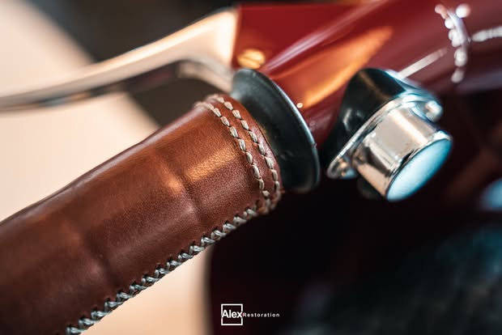
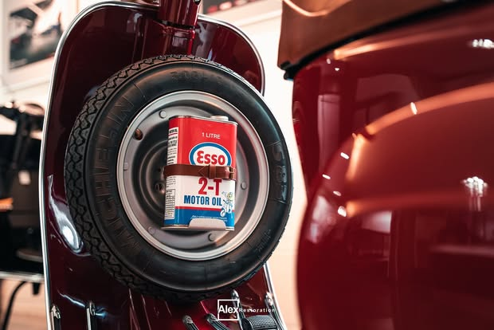
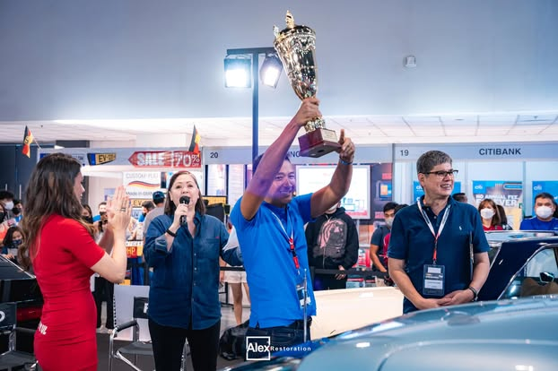
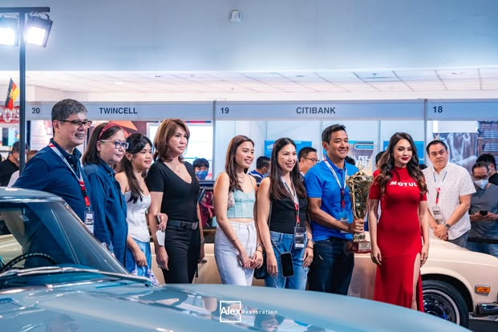

Finished vehicles, true details, workshop context, and compact evidence sets do the communication.

Classic.
Reborn.
A visual translation of Alex Car Restoration’s public identity: workshop-authentic, model-specific, image-led, and backed by visible proof.
Automotive serviceQuezon CityResearch confidence: high
00 / Summary
Proof is the brand.
The identity does not depend on elaborate graphics. It repeats a compact system: recognizable classics, clean shop photography, exact model naming, transformation language, a small watermark, and public evidence of long-term enthusiast credibility.
Precision and finish without generic black-and-gold luxury or exaggerated motorsport styling.
Every public claim, service, image, and project credit must remain traceable to Alex’s own content.
The website should feel
Proven. Precise. Enthusiast-led. Award-backed.
The governing idea
Let Alex Car Restoration’s own vehicles and workshop become the visual system. Present each restoration as evidence, not decoration.
- One strong hero, then specific proof.
- Exact vehicle. Exact work. Tangible outcome.
- Black and white structure; red as a signal.
01 / Brand identity
Existing marks, unchanged.
Two recognizable assets anchor the system. Treat both as finished artwork—not typography to be recreated.

Primary circular mark
Compact social recognition
Black circular field, thick white perimeter ring, and tightly composed white AleX lettering with a small red wedge on the final X. Best used for the favicon, avatar continuity, and compact mobile placement.
Horizontal markAleX Restoration
The horizontal lockup—bold AleX at left, smaller widely tracked Restoration at right—is the recommended website signature once a clean transparent or vector master is supplied.
- 01Do not retype, trace, redraw, smooth, or “modernize” either logo.
- 02Use the horizontal mark in navigation and on photography when its existing watermark does not duplicate it.
- 03Request production masters before launch; the social image shown here is for research presentation only.
02 / Visual system
Black. White. One red signal.
The defensible palette is intentionally small. Vehicle paint belongs to each project; it does not become interface color.
Alex Black#000000 · Primary
Near Black#161616 · Web support
Signal Red#D9141D approx. · Accent
Workshop Gray#E7E7E5 · Support
Restoration White#FFFFFF · Primary
Signal Red is sampled approximately from the compressed profile mark. Confirm official values before production.
Display / substitute only
1968
280SL
280SL
Roboto Condensed 700 is the recommended production substitute. This preview falls back to available condensed system faces.
Body / neutral system sans
A timeless 1968 Mercedes-Benz 280SL, carefully restored through precise bodywork, paint, detailing, and protection.
Arial, Helvetica, or a neutral system sans. Avoid fashion serifs, techno faces, and exaggerated racing italics.
03 / Photography
The workshop is the studio.
Keep the vehicles polished and the context honest. Lifts, shutters, concrete, tools, other classics, trophy cabinets, and event crowds are evidence of real work.
01 / Confirmed restoration
Datsun 240Z
Full frame-off restoration and ceramic coating, presented inside the working Alex shop. The public project caption also records a Best of Show outcome.
View source project
02 / Confirmed project pattern
Mercedes-Benz 280SL
Frame-on restoration with bodywork, oven-baked painting, and interior/exterior detailing.

03 / Confirmed frame-off
Vespa 50S
A finished restoration presented with trophy-wall context and a strong sequence of material details.
Build imagery treatmentFinished vehicle.
Finished vehicle.
Craft detail.
Material proof.
No artificial before/after is shown. Until a matched pair is verified, a truthful build sequence is the more credible treatment.


Hero
Use a wide finished vehicle in the Alex shop, with calm symmetry or a three-quarter stance and clear reflections.
Evidence set
Follow with angles, cabin, engine, and material details from the same verified project.
Process
Reserve the label for genuine work imagery: bodywork, preparation, paint, reassembly, or tools in use.
All photography in this presentation comes from Alex Car Restoration’s public Facebook content. Existing watermarks are preserved.
04 / Voice & copy
Exact work. Tangible outcome.
The public voice has two useful modes: polished restoration storytelling and direct commercial/service posts.
Restoration storytelling
Model-specific English focused on transformation, precision, patience, paint, protection, craftsmanship, heritage, and rebirth.
Name the vehicle.
Name the work.
Show the proof.
Name the work.
Show the proof.
Recommended structure: year/model → scope → key work → finished outcome or award → direct CTA.
Commercial & service
Short, direct English with a message, phone, or booking CTA. Location, financing, and hashtags may follow when relevant.
Discuss your project.
Book your restoration.
Book your restoration.
Use Filipino/Taglish selectively for community warmth or direct local replies, not as a forced brand device.
05 / Verified services
Lead with what is proven.
The website hierarchy should stay anchored to Alex’s public service line and confirmed project captions.
Full Restoration
Frame-off and frame-on work confirmed across classic cars and motorcycles.
Body & Paint
Bodywork and oven-baked painting named in a confirmed Mercedes 280SL project.
Detailing
Interior/exterior detailing and paint correction recur across profile and project content.
Ceramic Coating
Publicly listed and repeatedly shown, including the restored Datsun 240Z.
PPF Removal
Verified in current GT3 RS service content; nested under detailing and protection.
Keep out until verified / UNKNOWN: mechanical restoration as a standalone service, upholstery, custom fabrication, parts sourcing, collision repair, storage, transport, and consignment.
06 / Credibility
Show the evidence. Attribute the claim.
Awards and community scale are central to the existing public identity. Use them carefully and keep time-sensitive or self-reported context visible.


Observed public proof
300+“300+ Car Show Awards since 1992” — self-reported in the Facebook page bio.
88K88K Facebook followers at research date (August 28, 2026); inherently time-sensitive.
Best of ShowDatsun 240Z outcome claimed in the confirmed frame-off restoration post.
Observed page claims, not independently audited facts. Production copy should preserve attribution until supporting records are assembled.
07 / Website translation
A controlled sequence of proof.
The strongest concept is an editorial restoration portfolio: one decisive opening image, named work, compact service language, and project sequences that let the evidence accumulate.
Hero
One Alex-owned workshop image, a specific value statement, verified service scope, location, and a direct booking or message CTA.
Core services
Full Restoration, Body & Paint, Detailing, and Ceramic Coating. Evidence-linked rather than icon-led.
Featured projects
Datsun 240Z, Mercedes 280SL, and Vespa 50S presented by model, scope, detail, and outcome.
Craft & process
Real work stages, material details, and hands or tools only where the source genuinely proves them.
Awards & reputation
Attributed public claims paired with trophy, team, and show-floor photography.
Contact
Booking route, primary message channel, address, hours, and the information a prospective client should send.
Density
Image-heavy but controlled. Prefer one hero and a coherent project sequence over a mosaic of unrelated cars.
Motion
Slow reveals and restrained transitions. No rev effects, tire smoke, speedometers, or constant parallax.
Optional sales
Add “Selected Classics for Sale” only if Alex confirms sales as a lasting pillar. Keep it separate from restoration credits.
Recommended primary conversionBring the vehicle.
Book a restoration
Bring the vehicle.
Start with the conversation.
Use Alex’s existing public booking route and the same directness found in current service posts.
08 / Guardrails
Protect what is already distinctive.
The concept becomes stronger by refusing unsupported luxury clichés, invented capabilities, and substitute imagery.
Do
- Use Alex’s actual marks and public photography.
- Lead with confirmed restoration projects.
- Keep workshop, trophy, and event context visible.
- Use hero, angle, detail, process, and result as evidence.
- Attribute awards, statistics, and time-sensitive claims.
- Keep red small and purposeful.
Don’t
- Generate or source substitute vehicle and shop imagery.
- Redraw or modernize the logo.
- Use black-and-gold luxury, heritage-serif, carbon-fiber, or neon-dashboard clichés.
- Turn vehicle paint colors into brand colors.
- Call beauty shots “process” or sales cars “Alex restorations” without proof.
- Manufacture a before/after comparison from mismatched images.
09 / Open questions
Resolve before production.
These unknowns are deliberately visible. They prevent the concept from hardening guesses into brand facts.
- Are clean vector or transparent masters available for both logo variants?
- What are the official color values and exact horizontal-lockup font?
- What is the verified founding and operating timeline?
- Who should be named as founder, lead restorer, or spokesperson?
- Which awards can be documented by year, show, and category?
- Should vehicle sales become a permanent website section?
- Which additional capabilities are standalone paid services?
- Can Alex supply genuine matched before/after pairs?
- Which posts contain the strongest true in-process images?
- May still frames be extracted from Alex’s public reels?
- Which phone number and booking route should be primary?
- Is Alex Detail Studio a sub-brand, a service line, or only a hashtag variation?
10 / Sources
Primary evidence.
Public Facebook surfaces reviewed on August 28, 2026. Reopen original posts and obtain production-resolution files before launch.
- Alex Car Restoration Facebook profileBrand, bio, services, audience
- Current cover photoMercedes workshop hero
- Profile image / circular markPrimary logo evidence
- Datsun 240Z full frame-off restorationHero, scope, coating, Best of Show
- 1968 Mercedes-Benz 280SL frame-on restorationBodywork, paint, detailing
- Vespa 50S frame-off restorationFinished project and details
- Car-show tradition and awards featureTrophies, team, event proof
- Ceramic-coating search resultsPPF removal and protection work
- Public booking linkCurrent conversion route
For the full evidence inventory, confidence notes, additional source links, and verbatim research rationale, see the companion Markdown report.